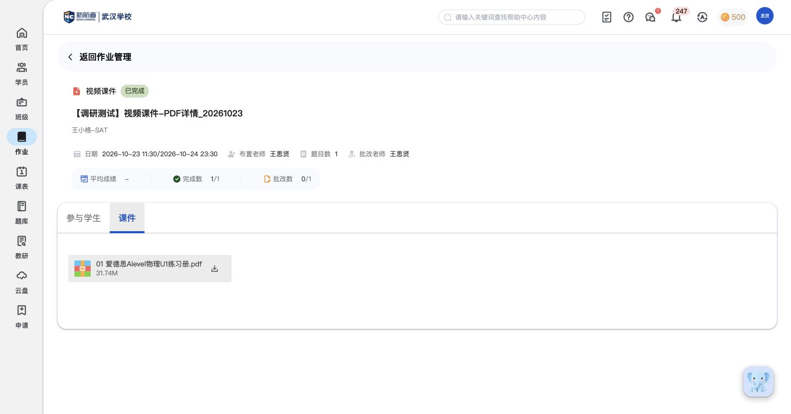
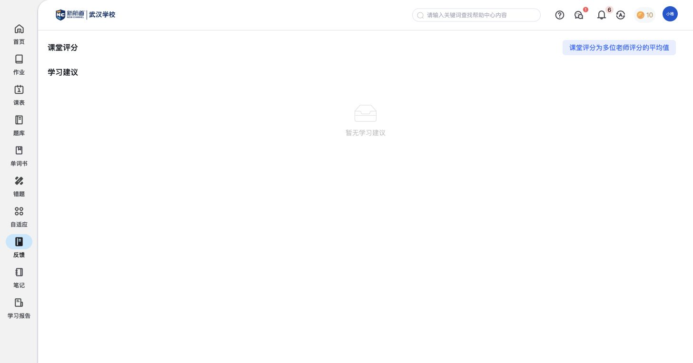
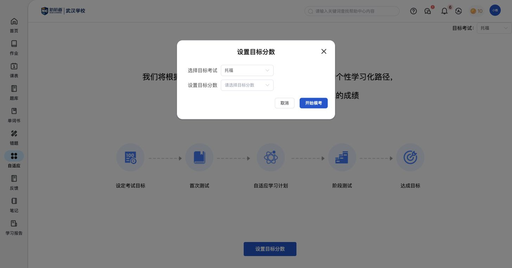

本轮返回产品的复核记录
2026-10-26，使用已授权教师与学员测试账号；未新增任务、批改、评语、目标或测评。
PDF教师完成记录
同名PDF任务已完成，参与学员进度1/1，详情含参与学生与课件。

PDF课件内容
关联文件为“01 爱德思Alevel物理U1练习册.pdf”，不是视频播放样例。
实时作业结束后详情
保留实时标记，回到普通作业详情；三道词汇题100分，参与学员1/1。等待、开答与教师结束过程沿用此前双端原始记录。

签到与校币展示
首页出现签到奖励提示和顶部校币信息；只确认展示，不推断奖励或兑换规则。

学员课堂反馈
仍只有课堂评分说明和学习建议区域，没有有效内容样例。

自适应目标设置
选择考试和分数，下一步为开始模考。未保存目标或启动测评，未见生成后的学习计划。
